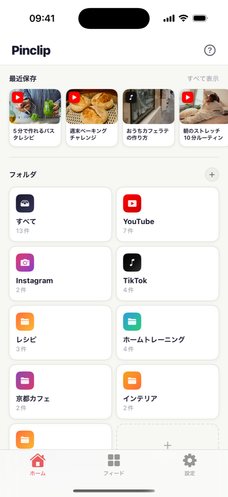
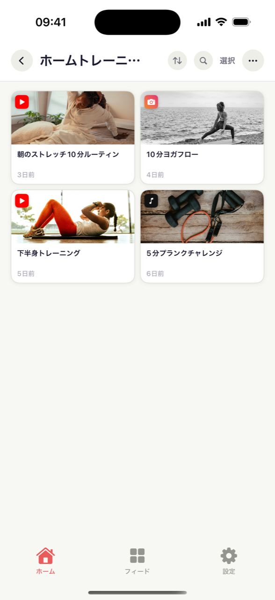
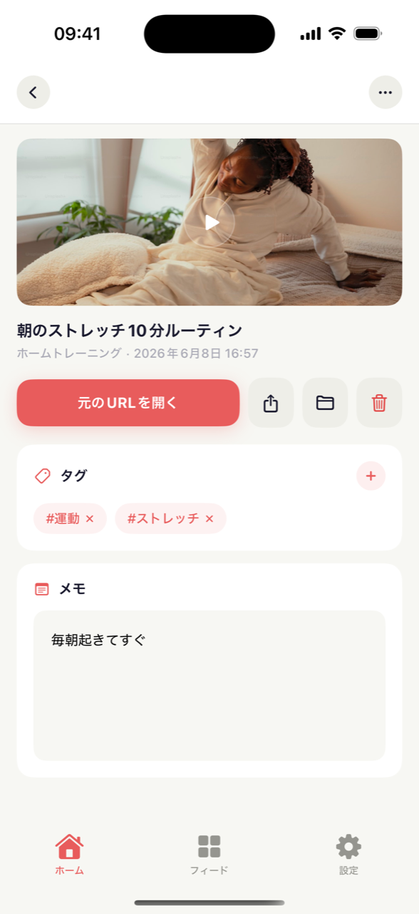
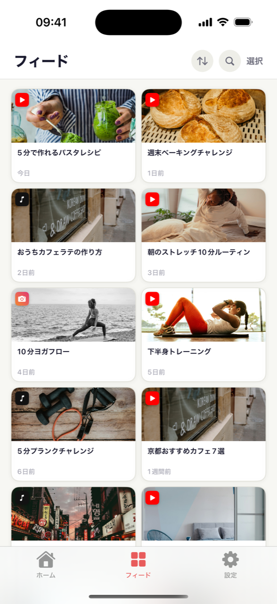

確かに保存したはずのあのレシピ動画、どこへ？ Pinclip はショート・リール・TikTok のリンクをタイトルとサムネイル付きで一か所に集め、また開きたくなるフォルダに整理します。

残したい動画に出会ったら共有ボタン → Pinclip。アプリを切り替えずに完了。
リンクを渡すだけで、タイトルとサムネイルが自動で埋まります。リンクの山ではなく、見えるライブラリに。
フォルダに入れて #タグ と保存した理由のメモを。未来の自分が感謝します。
開かない保存はただの罪悪感。Pinclip は「先週見たあのトレーニング動画」を、すぐ飛べるフォルダとタグに変えます。
リンクのあるアプリならどこからでも共有で保存。YouTube・TikTok はタイトルとサムネイルまで自動。すべて一か所で検索できます。



YouTube・Instagram・TikTok を離れずに保存。2タップでスクロールに戻る。
フォルダやお気に入りのピンをホーム画面に。ロック解除から動画までワンタップ。
Pro は自分の iCloud で iPad にも同期 — 当社サーバーは使いません。
フォルダをリンクひとつで共有。受け取った人はブラウザで見られて、自分の Pinclip に取り込むことも。
ショート・リール・TikTok がプラットフォーム別に自動分類。
#タグ と保存した理由のメモ。タグをタップすれば関連動画がすべて。